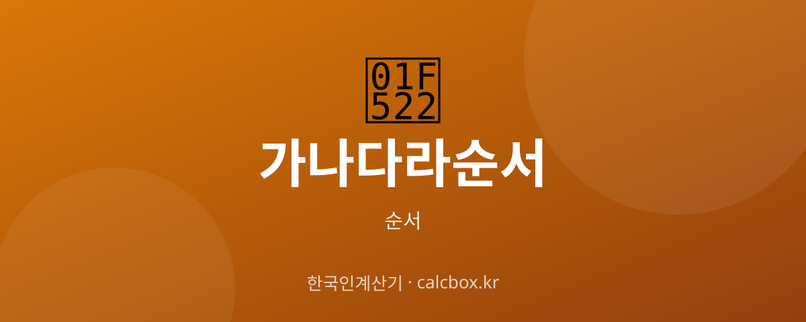

가나다라 순서 — 한글 자음·모음 순서 총정리 (사전 순서 포함)
이름·목록을 정렬할 때 기준이 되는 가나다라 순서. 한글 자음과 모음이 어떤 차례로 배열되는지, 사전에서는 된소리를 어떻게 끼워 넣는지 정리했습니다.

가나다라(한글) 순서 한눈에
'가나다라'는 한글 자음(닿소리)과 모음(홀소리)이 결합해 만들어지는 글자 순서를 말합니다. 정렬의 기준은 먼저 첫 자음(초성) 순서, 그다음 모음 순서를 따릅니다.
기본 자음은 14개, 기본 모음은 10개이며, 사전에서는 여기에 된소리(ㄲ·ㄸ·ㅃ·ㅆ·ㅉ)와 겹모음까지 포함해 배열합니다.
가나다라(한글) 순서 정리
먼저 기본 자음과 모음의 순서입니다.
| 구분 | 기준 | 순서 |
|---|---|---|
| 자음 14자 | 기본 자음 순서 | ㄱ ㄴ ㄷ ㄹ ㅁ ㅂ ㅅ ㅇ ㅈ ㅊ ㅋ ㅌ ㅍ ㅎ |
| 모음 10자 | 기본 모음 순서 | ㅏ ㅑ ㅓ ㅕ ㅗ ㅛ ㅜ ㅠ ㅡ ㅣ |
| 자음 19자 | 사전 순서(된소리 포함) | ㄱ ㄲ ㄴ ㄷ ㄸ ㄹ ㅁ ㅂ ㅃ ㅅ ㅆ ㅇ ㅈ ㅉ ㅊ ㅋ ㅌ ㅍ ㅎ |
| 모음 21자 | 사전 순서(겹모음 포함) | ㅏ ㅐ ㅑ ㅒ ㅓ ㅔ ㅕ ㅖ ㅗ ㅘ ㅙ ㅚ ㅛ ㅜ ㅝ ㅞ ㅟ ㅠ ㅡ ㅢ ㅣ |
쉽게 외우는 법
자음은 '기역 니은 디귿 리을 미음 비읍 시옷 이응 지읒 치읓 키읔 티읕 피읖 히읗' 이름 순서로 외우면 헷갈리지 않습니다.
정렬할 때는 초성(첫 자음) → 중성(모음) → 종성(받침) 차례로 비교합니다. 예를 들어 '강'과 '감'은 초성·중성이 같고 받침 ㅇ과 ㅁ에서 순서가 갈립니다.
참고사항
된소리 ㄲ·ㄸ·ㅃ·ㅆ·ㅉ은 각각 대응하는 예사소리(ㄱ·ㄷ·ㅂ·ㅅ·ㅈ) 바로 뒤에 옵니다. 한글 정렬(가나다순)은 엑셀·문서 프로그램의 '오름차순 정렬' 기준과 같습니다.
자주 묻는 질문 (FAQ)
Q. 한글 자음은 모두 몇 개인가요?
기본 자음은 ㄱ부터 ㅎ까지 14개입니다. 여기에 된소리(ㄲ·ㄸ·ㅃ·ㅆ·ㅉ) 5개를 더하면 사전에서 쓰는 19개가 됩니다.
Q. 사전에서 된소리 ㄲ은 어디에 오나요?
예사소리 바로 뒤에 옵니다. 즉 ㄱ 다음에 ㄲ, ㄷ 다음에 ㄸ 순서로 배열됩니다. '가' 다음에 '까'가 오는 이유입니다.
Q. 이름 가나다순 정렬은 어떻게 하나요?
성의 첫 글자 초성부터 비교하고, 같으면 모음, 그다음 받침 순으로 비교합니다. 엑셀에서는 '오름차순 정렬'을 쓰면 자동으로 가나다순으로 정렬됩니다.